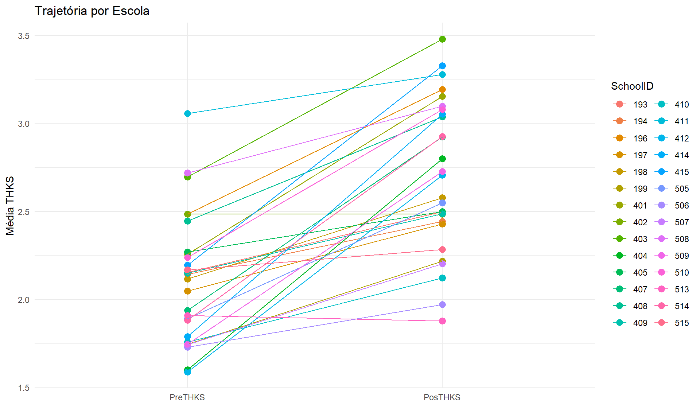
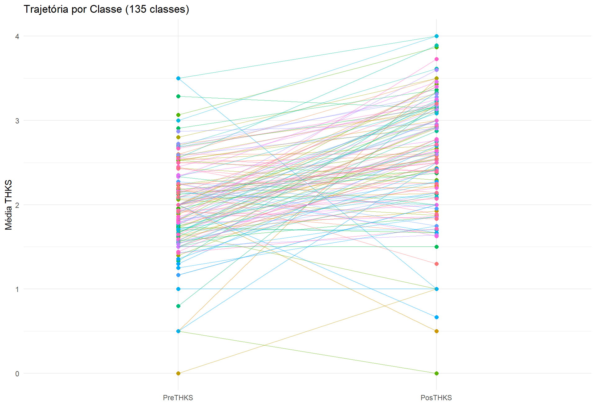
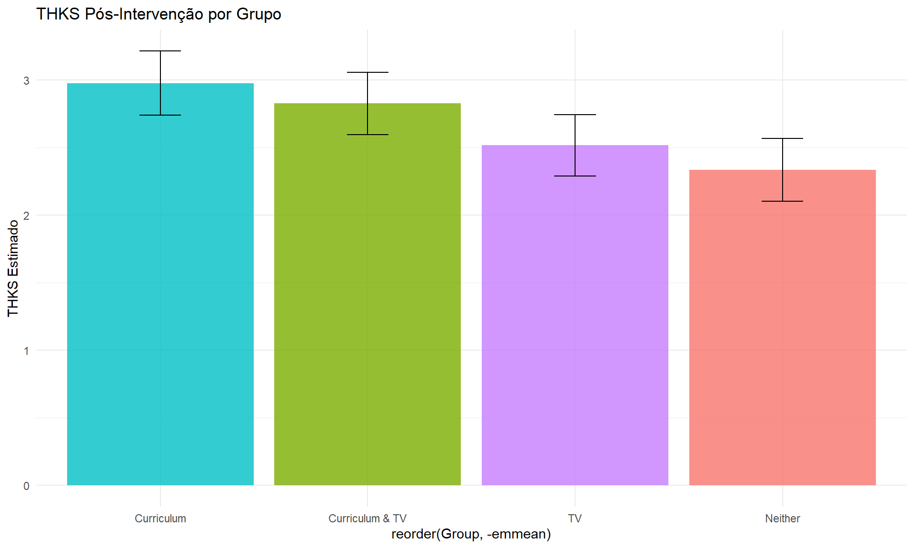

dataset <- read.spss("THKS2.sav", to.data.frame = TRUE)
# Corrigir tipos
dataset$SchoolID <- as.factor(dataset$SchoolID)
dataset$ClassID <- as.factor(dataset$ClassID)
dataset$PreTHKS <- as.integer(dataset$PreTHKS)
dataset$PosTHKS <- as.integer(dataset$PosTHKS)
dataset$Tamanho_Classe <- ave(dataset$PreTHKS, dataset$SchoolID, dataset$ClassID, FUN = length)Lista 4: Modelos Hierárquicos e ICC
📖 Contexto: Estudo TVSFP
Television, School and Family Smoking Prevention Project
Objetivo: Avaliar eficácia de programas anti-tabagismo
Intervenções: - CC: Currículo presencial - TV: Programa televisivo
4 Grupos: Curriculum&TV, Curriculum, TV, Neither (controle)
Amostra: 1.600 alunos, 135 classes, 28 escolas (Los Angeles)
VD: THKS (Tobacco and Health Knowledge Scale) pré e pós
📦 Pacotes
📥 Dados
🎯 Parte A: Análise Visual dos Níveis
Por Escola
media_escola <- aggregate(cbind(PreTHKS, PosTHKS) ~ SchoolID, data = dataset, FUN = mean)
media_escola_long <- pivot_longer(media_escola, cols = c("PreTHKS", "PosTHKS"), names_to = "tempo", values_to = "media")
ggplot(media_escola_long, aes(x = fct_rev(tempo), y = media, color = SchoolID, group = SchoolID)) +
geom_point(size = 3) + geom_line() +
labs(title = "Trajetória por Escola", x = "", y = "Média THKS") +
theme_minimal() + theme(legend.position = "right")
Padrão: Aumento consistente → Escola = efeito fixo?
Por Classe
media_classe <- aggregate(cbind(PreTHKS, PosTHKS) ~ ClassID, data = dataset, FUN = mean)
media_classe_long <- pivot_longer(media_classe, cols = c("PreTHKS", "PosTHKS"), names_to = "tempo", values_to = "media")
ggplot(media_classe_long, aes(x = fct_rev(tempo), y = media, color = ClassID, group = ClassID)) +
geom_point(size = 2) + geom_line(alpha = 0.4) +
labs(title = "Trajetória por Classe (135 classes)", x = "", y = "Média THKS") +
theme_minimal() + theme(legend.position = "none")
Padrão: Heterogêneo → Classe = efeito aleatório!
🎯 Parte D: ICC
Modelo 1: Com Preditores
modelo_1 <- lmer(PosTHKS ~ 1 + Group * PreTHKS + (1|SchoolID:ClassID) + (1|SchoolID), data = dataset, REML = TRUE)
var_modelo_1 <- as.data.frame(VarCorr(modelo_1))
var_classe_1 <- var_modelo_1$vcov[1]
var_escola_1 <- var_modelo_1$vcov[2]
var_erro_1 <- var_modelo_1$vcov[3]
icc_escola_1 <- var_escola_1 / (var_escola_1 + var_erro_1)
icc_classe_1 <- var_classe_1 / (var_classe_1 + var_erro_1)
cat("ICC Escola:", round(icc_escola_1, 4), "=", round(icc_escola_1 * 100, 2), "%\n")ICC Escola: 0.0235 = 2.35 %cat("ICC Classe:", round(icc_classe_1, 4), "=", round(icc_classe_1 * 100, 2), "%\n")ICC Classe: 0.0389 = 3.89 %Modelo 2: Apenas Aleatórios
modelo_2 <- lmer(PosTHKS ~ 1 + (1|SchoolID:ClassID) + (1|SchoolID), data = dataset, REML = TRUE)
var_modelo_2 <- as.data.frame(VarCorr(modelo_2))
icc_escola_2 <- var_modelo_2$vcov[2] / (var_modelo_2$vcov[2] + var_modelo_2$vcov[3])
icc_classe_2 <- var_modelo_2$vcov[1] / (var_modelo_2$vcov[1] + var_modelo_2$vcov[3])
cat("ICC Escola:", round(icc_escola_2, 4), "=", round(icc_escola_2 * 100, 2), "%\n")ICC Escola: 0.0634 = 6.34 %cat("ICC Classe:", round(icc_classe_2, 4), "=", round(icc_classe_2 * 100, 2), "%\n")ICC Classe: 0.047 = 4.7 %
Note
Escola passa de <5% para >5% sem preditores!
🎯 Parte E: Modelo Final
dataset$Group <- relevel(dataset$Group, ref = "Neither")
modelo_final <- lme(
fixed = PosTHKS ~ 1 + PreTHKS + Group,
random = ~1|SchoolID/ClassID,
data = dataset,
method = "REML"
)Diagnóstico
check_model(modelo_final)Converting missing values (`NA`) into regular values currently not
possible for variables of class `NULL`.
Comparações
comparacoes <- emmeans(modelo_final, pairwise ~ Group, adjust = "bonferroni")
comparacoes$contrasts contrast estimate SE df t.ratio p.value
Neither - Curriculum & TV -0.492 0.159 24 -3.104 0.0290
Neither - Curriculum -0.641 0.161 24 -3.985 0.0033
Neither - TV -0.182 0.157 24 -1.158 1.0000
Curriculum & TV - Curriculum -0.149 0.160 24 -0.928 1.0000
Curriculum & TV - TV 0.310 0.157 24 1.981 0.3550
Curriculum - TV 0.459 0.159 24 2.888 0.0485
Degrees-of-freedom method: containment
P value adjustment: bonferroni method for 6 tests Visualização
means_plot <- as.data.frame(comparacoes$emmeans)
ggplot(means_plot, aes(x = reorder(Group, -emmean), y = emmean, fill = Group)) +
geom_col(alpha = 0.8) +
geom_errorbar(aes(ymin = lower.CL, ymax = upper.CL), width = 0.2) +
labs(title = "THKS Pós-Intervenção por Grupo", y = "THKS Estimado") +
theme_minimal() + theme(legend.position = "none")
🔧 Extras
Função ICC Personalizada
icc_lme_3nv <- function(modelo) {
var_escola <- as.numeric(VarCorr(modelo)[2, "Variance"])
var_classe <- as.numeric(VarCorr(modelo)[4, "Variance"])
var_res <- as.numeric(VarCorr(modelo)[5, "Variance"])
list(
ICC_Escola = var_escola / (var_escola + var_res),
ICC_Classe = var_classe / (var_classe + var_res)
)
}
icc_lme_3nv(modelo_final)$ICC_Escola
[1] 0.02354758
$ICC_Classe
[1] 0.03879018Comparação Modelos
compare_performance(modelo_1, modelo_2, metrics = c("AIC", "BIC"), rank = TRUE)# Comparison of Model Performance Indices
Name | Model | AIC weights | BIC weights | Performance-Score
------------------------------------------------------------------
modelo_1 | lmerMod | 1.00 | 1.00 | 100.00%
modelo_2 | lmerMod | 2.80e-30 | 4.19e-22 | 0.00%📚 Material Complementar
🔧 Sessão
report(sessionInfo())Analyses were conducted using the R Statistical language (version 4.4.2; R Core
Team, 2024) on Windows 11 x64 (build 26100), using the packages lme4 (version
1.1.37; Bates D et al., 2015), Matrix (version 1.7.1; Bates D et al., 2024),
effectsize (version 1.0.1; Ben-Shachar MS et al., 2020), flexplot (version
0.24.3; Fife, D, 2022), emmeans (version 1.11.0; Lenth R, 2025), parameters
(version 0.28.3; Lüdecke D et al., 2020), performance (version 0.15.2; Lüdecke
D et al., 2021), easystats (version 0.7.5; Lüdecke D et al., 2022), see
(version 0.12.0; Lüdecke D et al., 2021), insight (version 1.4.4; Lüdecke D et
al., 2019), bayestestR (version 0.17.0; Makowski D et al., 2019), modelbased
(version 0.13.1; Makowski D et al., 2025), report (version 0.6.3; Makowski D et
al., 2023), correlation (version 0.8.8; Makowski D et al., 2022), datawizard
(version 1.3.0; Patil I et al., 2022), nlme (version 3.1.166; Pinheiro J et
al., 2024), foreign (version 0.8.87; R Core Team, 2024), ggplot2 (version
4.0.1; Wickham H, 2016), forcats (version 1.0.0; Wickham H, 2023), dplyr
(version 1.1.4; Wickham H et al., 2023), tidyr (version 1.3.1; Wickham H et
al., 2024), misty (version 0.7.6; Yanagida T, 2025) and kableExtra (version
1.4.0; Zhu H, 2024).
References
----------
- Bates D, Mächler M, Bolker B, Walker S (2015). "Fitting Linear Mixed-Effects
Models Using lme4." _Journal of Statistical Software_, *67*(1), 1-48.
doi:10.18637/jss.v067.i01 <https://doi.org/10.18637/jss.v067.i01>.
- Bates D, Maechler M, Jagan M (2024). _Matrix: Sparse and Dense Matrix Classes
and Methods_. R package version 1.7-1,
<https://CRAN.R-project.org/package=Matrix>.
- Ben-Shachar MS, Lüdecke D, Makowski D (2020). "effectsize: Estimation of
Effect Size Indices and Standardized Parameters." _Journal of Open Source
Software_, *5*(56), 2815. doi:10.21105/joss.02815
<https://doi.org/10.21105/joss.02815>, <https://doi.org/10.21105/joss.02815>.
- Fife, A. D (2022). "Flexplot: Graphically-based data analysis."
_Psychological Methods_, *27*(4), -19. <doi.org/10.1037/met0000424>.
- Lenth R (2025). _emmeans: Estimated Marginal Means, aka Least-Squares Means_.
R package version 1.11.0, <https://CRAN.R-project.org/package=emmeans>.
- Lüdecke D, Ben-Shachar M, Patil I, Makowski D (2020). "Extracting, Computing
and Exploring the Parameters of Statistical Models using R." _Journal of Open
Source Software_, *5*(53), 2445. doi:10.21105/joss.02445
<https://doi.org/10.21105/joss.02445>.
- Lüdecke D, Ben-Shachar M, Patil I, Waggoner P, Makowski D (2021).
"performance: An R Package for Assessment, Comparison and Testing of
Statistical Models." _Journal of Open Source Software_, *6*(60), 3139.
doi:10.21105/joss.03139 <https://doi.org/10.21105/joss.03139>.
- Lüdecke D, Ben-Shachar M, Patil I, Wiernik B, Bacher E, Thériault R, Makowski
D (2022). "easystats: Framework for Easy Statistical Modeling, Visualization,
and Reporting." _CRAN_. doi:10.32614/CRAN.package.easystats
<https://doi.org/10.32614/CRAN.package.easystats>, R package,
<https://easystats.github.io/easystats/>.
- Lüdecke D, Patil I, Ben-Shachar M, Wiernik B, Waggoner P, Makowski D (2021).
"see: An R Package for Visualizing Statistical Models." _Journal of Open Source
Software_, *6*(64), 3393. doi:10.21105/joss.03393
<https://doi.org/10.21105/joss.03393>.
- Lüdecke D, Waggoner P, Makowski D (2019). "insight: A Unified Interface to
Access Information from Model Objects in R." _Journal of Open Source Software_,
*4*(38), 1412. doi:10.21105/joss.01412 <https://doi.org/10.21105/joss.01412>.
- Makowski D, Ben-Shachar M, Lüdecke D (2019). "bayestestR: Describing Effects
and their Uncertainty, Existence and Significance within the Bayesian
Framework." _Journal of Open Source Software_, *4*(40), 1541.
doi:10.21105/joss.01541 <https://doi.org/10.21105/joss.01541>,
<https://joss.theoj.org/papers/10.21105/joss.01541>.
- Makowski D, Ben-Shachar M, Wiernik B, Patil I, Thériault R, Lüdecke D (2025).
"modelbased: An R package to make the most out of your statistical models
through marginal means, marginal effects, and model predictions." _Journal of
Open Source Software_, *10*(109), 7969. doi:10.21105/joss.07969
<https://doi.org/10.21105/joss.07969>,
<https://joss.theoj.org/papers/10.21105/joss.07969>.
- Makowski D, Lüdecke D, Patil I, Thériault R, Ben-Shachar M, Wiernik B (2023).
"Automated Results Reporting as a Practical Tool to Improve Reproducibility and
Methodological Best Practices Adoption." _CRAN_.
doi:10.32614/CRAN.package.report
<https://doi.org/10.32614/CRAN.package.report>,
<https://easystats.github.io/report/>.
- Makowski D, Wiernik B, Patil I, Lüdecke D, Ben-Shachar M (2022).
"correlation: Methods for Correlation Analysis." Version 0.8.3,
<https://CRAN.R-project.org/package=correlation>. Makowski D, Ben-Shachar M,
Patil I, Lüdecke D (2020). "Methods and Algorithms for Correlation Analysis in
R." _Journal of Open Source Software_, *5*(51), 2306. doi:10.21105/joss.02306
<https://doi.org/10.21105/joss.02306>,
<https://joss.theoj.org/papers/10.21105/joss.02306>.
- Patil I, Makowski D, Ben-Shachar M, Wiernik B, Bacher E, Lüdecke D (2022).
"datawizard: An R Package for Easy Data Preparation and Statistical
Transformations." _Journal of Open Source Software_, *7*(78), 4684.
doi:10.21105/joss.04684 <https://doi.org/10.21105/joss.04684>.
- Pinheiro J, Bates D, R Core Team (2024). _nlme: Linear and Nonlinear Mixed
Effects Models_. R package version 3.1-166,
<https://CRAN.R-project.org/package=nlme>. Pinheiro JC, Bates DM (2000).
_Mixed-Effects Models in S and S-PLUS_. Springer, New York. doi:10.1007/b98882
<https://doi.org/10.1007/b98882>.
- R Core Team (2024). _foreign: Read Data Stored by 'Minitab', 'S', 'SAS',
'SPSS', 'Stata', 'Systat', 'Weka', 'dBase', ..._. R package version 0.8-87,
<https://CRAN.R-project.org/package=foreign>.
- R Core Team (2024). _R: A Language and Environment for Statistical
Computing_. R Foundation for Statistical Computing, Vienna, Austria.
<https://www.R-project.org/>.
- Wickham H (2016). _ggplot2: Elegant Graphics for Data Analysis_.
Springer-Verlag New York. ISBN 978-3-319-24277-4,
<https://ggplot2.tidyverse.org>.
- Wickham H (2023). _forcats: Tools for Working with Categorical Variables
(Factors)_. R package version 1.0.0,
<https://CRAN.R-project.org/package=forcats>.
- Wickham H, François R, Henry L, Müller K, Vaughan D (2023). _dplyr: A Grammar
of Data Manipulation_. R package version 1.1.4,
<https://CRAN.R-project.org/package=dplyr>.
- Wickham H, Vaughan D, Girlich M (2024). _tidyr: Tidy Messy Data_. R package
version 1.3.1, <https://CRAN.R-project.org/package=tidyr>.
- Yanagida T (2025). _misty: Miscellaneous Functions 'T. Yanagida'_. R package
version 0.7.6, <https://CRAN.R-project.org/package=misty>.
- Zhu H (2024). _kableExtra: Construct Complex Table with 'kable' and Pipe
Syntax_. R package version 1.4.0,
<https://CRAN.R-project.org/package=kableExtra>.